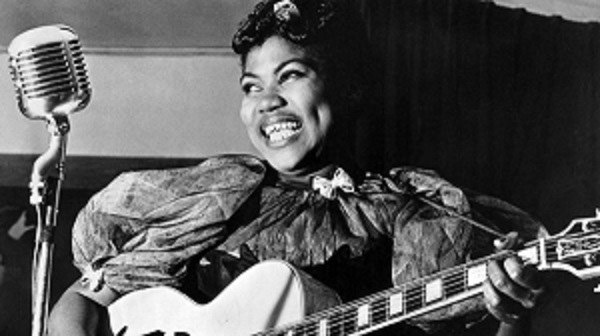
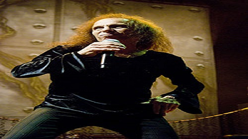

Heavy metal (ou simplesmente metal) é um gênero do rock, que se desenvolveu no final da década de 1960 e no início da década de 1970,
em grande parte no Reino Unido e nos Estados Unidos.[3] Tendo como raízes o blues-rock e o rock psicodélico (psicadélico, em português europeu),
as bandas que criaram o heavy metal desenvolveram um som massivo e encorpado, caracterizado por um timbre saturado e distorcido dos amplificadores,
pelas cordas graves da guitarra para a criação de riffs e pela exploração de sonoridades em tons menores, dando um ar sombrio às composições. O Allmusic
afirma que "de todos os formatos do rock 'n' roll, o heavy metal é a forma mais extrema em termos de volume e teatralidade".
As primeiras bandas de heavy metal como Led Zeppelin, Deep Purple e Black Sabbath atraíram um grande público, apesar de muitas vezes serem desdenhadas
pelos críticos, um fato comum em toda a história do gênero. Em meados da década de 1970, a banda Judas Priest ajudou a impulsionar a evolução do gênero suprimindo muito da
influência do blues existente;[5][6] o Motörhead introduziu a sensibilidade do punk rock e uma ênfase crescente na velocidade. Bandas do New Wave of British Heavy Metal como
Iron Maiden e Saxon seguiram o mesmo caminho.
Durante a década de 1980, o glam metal tornou-se uma força comercial com grupos como Mötley Crüe e Poison. O underground produziu cenas mais extremas e estilos
agressivos: o thrash metal invadiu o mainstream trazendo à luz bandas como Anthrax, Megadeth, Metallica e Slayer, enquanto outros estilos ainda mais pesados como o
death metal e o black metal permaneceram como fenômenos da subcultura do metal. Desde meados da década de 1990, estilos populares como o groove metal (ex.: Pantera)
que combina metal extremo com hardcore punk, e o nu metal (ex.: Korn), que incorpora elementos de grunge e hip hop, ajudaram a ampliar a definição do gênero.
Como tudo começou

O rock foi criado pela Sister Rosetta Tharpe nos anos 1920, sendo ela uma das poucas negras a tocar guitarras naquela década. O ritmo
surgiu da união do gospel aos blues, com a aceleração de sua batida. A norte-americana era uma rockeira antes
mesmo dos grandes astros
Ao chegar em Chicago, Rosetta ficou fascinada com os Blues e Jazz e quis apresentar na sua igreja. Em 1938, a cantora assinou com a gravadora Decca Records, se tornando a primeira artista gospel a assinar com uma grande gravadora. Já em 1944, a irmã Rosetta grava o que seria considerada a primeira canção de rock no mundo, a “Strange Things Happening Every Day”.
Artistas como Elvis Presley, B.B. King e Johnny Cash e Bob Dylan se inspiraram nela e tornaram o rock, mundialmente conhecido como é hoje. Com a perda de sua mãe em 1968, a cantora começou a entrar em uma profunda depressão, até que descobriu uma diabete e precisou amputar uma de suas pernas. A sua morte aconteceu no ano de 1973, aos 58 anos, após ter sofrido dois derrames.
Falta de reconhecimento
Após sua morte, Sister Rosetta Tharpe foi sepultada em um túmulo, sem identificação, em um cemitério da Filadélfia, na Pensilvânia, EUA. Apenas em 2008, um grupo de pessoas realizou um show beneficente com objetivo de comprar uma lápide para ser colocada no local e identificar que seu corpo estava enterrado ali.
Dessa forma, o mais engraçado disso tudo é que sua obra tem fama entre os músicos do gênero, no entanto, carrega o desconhecimento do público, trazendo um certo aspecto de injustiça com a pioneira do estilo musical.
Apesar de toda sua história na música, a madrinha do rock’n’roll não obteve o reconhecimento que deveria receber, apenas tendo o seu nome colocado no Hall da Fama do Rock, 45 anos depois de sua morte. Além disso, o governo de Filadélfia instituiu o dia 11 de janeiro como o dia celebrado em homenagem à artista.
Rei do Heavy metal

Ronnie James Dio, nome artístico de Ronald James Padavona (Portsmouth, 10 de julho de 1942 — Houston, 16 de maio de 2010), foi um músico norte-americano, produtor e compositor de heavy metal, famoso como front-man das bandas Rainbow, Black Sabbath e Dio. É considerado um dos melhores vocalistas de todos os tempos pelo seu enorme talento e voz marcante, tendo influenciado muitos dos melhores vocalistas da atualidade.
Também é conhecido por ter introduzido a mão chifrada, símbolo do rock.
Ficou em 5º lugar na lista dos "50 Melhores Cantores de Rock e Metal" do site Loudwire, em 10º na lista dos
"100 melhores vocalistas de heavy metal" da revista HitParader,e foi eleito o 5° melhor cantor de vocais agudos no heavy metal
pelo OC Weekly. Sua extensão vocal é classificada como Tenor.
Em 2010, antes de morrer, Ronnie James Dio era um dos artistas do rock com maior longevidade da carreira, ao lado de Paul McCartney, Mick Jagger,
Chuck Berry e Little Richard.
Ronnie adotou o sobrenome artístico "Dio" inspirado no mafioso italiano Johnny Dio. Ainda na escola, formara a banda de rockabilly Vegas Kings que, após mudar de nome várias vezes (sendo chamada de Ronnie and the Rumbles, Ronnie and the Redcaps, Ronnie Dio and the Prophets, The Eletric Elves e The Elves), finalmente tornou-se conhecida como a banda ELF.